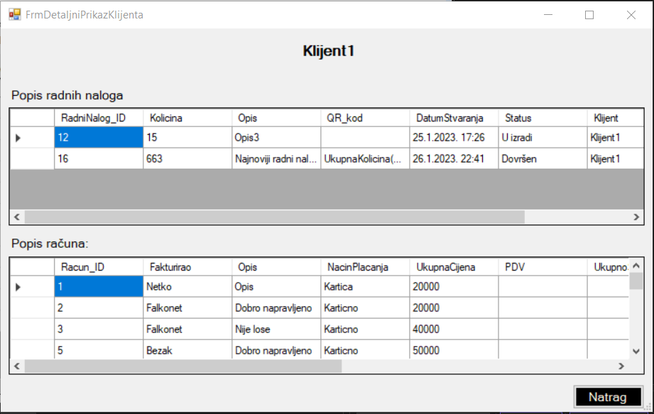

Forma za detalje klijenta otvara se kada radnik na formi za prikaz svih klijenta selektira jednog klijenta te klikne na gumb 'Detalji klijenta'. Forma detalji klijenta sastoji se od dva datagridview-a. Jedan prikazuje popis svih računa koje klijent ima, a drugi prikazuje popis radnih naloga vezani za tog klijenta. Iznad datagridview-a se nalazi naziv selektiranog klijenta. Ukoliko se radnik želi vratiti na prethodnu formu klikne na gumb 'Natrag'.
